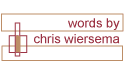

The order is everything. It doesn't even look right on the page: “play and work,” the eye quickly wants to reverse it as soon as it's scanned. Everyone knows that we work and then we play; we file our report sheets and total quotas and check in with the supervisor and sweep up the cigarette butts for the next shift, then we relax. Work is for the betterment of all, the greater good is served through the smallest of acts, and when the whole is attended, the individual within the labor structure also benefits. Play is for the self, what that self does to reinvigorate the sense of individuality and reinvent itself from outside of the work force so that the self can return to the labor pool Monday morning with a refreshed sense of self-awareness and thereby once again better serve the whole. You're welcome; I just saved you four years studying the Frankfurt School's theories of capitalist economical structure in relation to the leisure industry. All to explain that you work and then you take that money and go by things, namely, strong drinks for young dumb things. Our revolution is Thursday evening.
If you go out and tear the throat out of a Sunday night you are referred to as “rummy.” Now if you are one of tens of thousands that begin the weekend bender a night early, so much so that the possibility of getting any work slid into the outbox is near an act of God, you are “typical.” The great majority. And these songs are for you, those who can't stand to wait another day for your reward, you who peel the scotch tape ever so gently back from the folds of your closet-hidden birthday presents; you have turned the five day work week into four and two-fifths day.
The mix is play and work. It is the good before the bad, that reward just so that you can get through the next day. A reward so strong and loud, causing even the glass in your hand to sweat, that it more often than not makes the next day impossible to suffer through. Side one are the songs that are people; from the Peaches minimal fuck techno to the brazen screaming of the Gossip, you know all of these songs, they drink where you drink, and often with you. At times you are these songs. Side two is the collective everyone from the night before, all those different song-people, putting on the similar suit and dragging through the same endless last workday. All of them smelling like last night and begging the digital desk clock to inch forward faster.
| go to Side A song 1 |